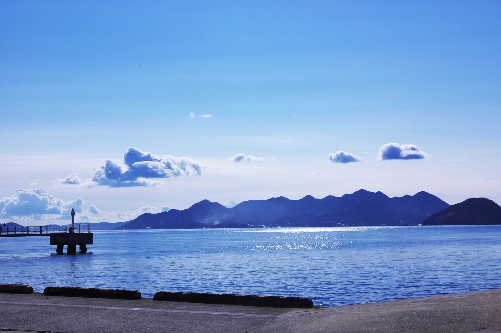
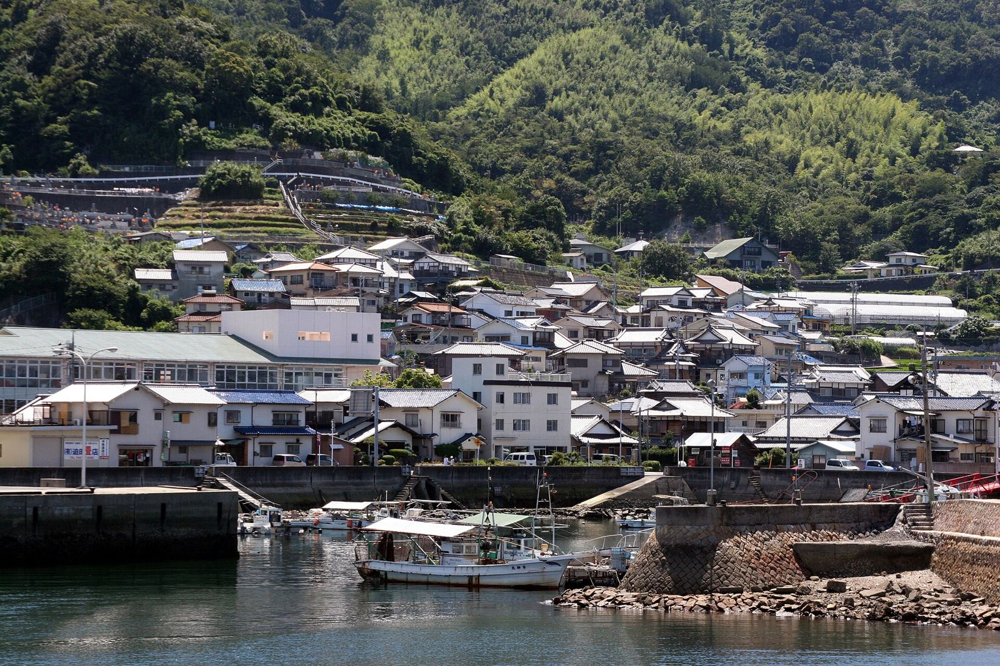
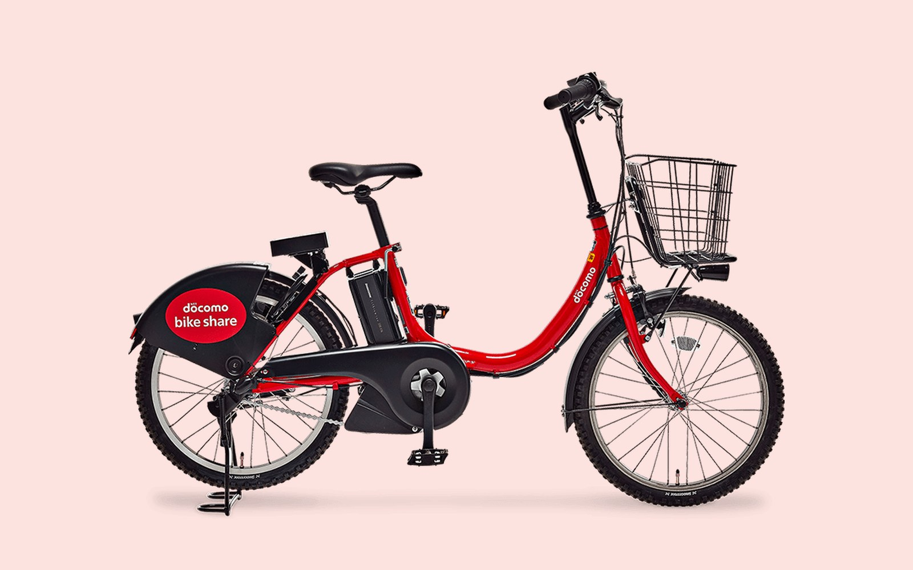
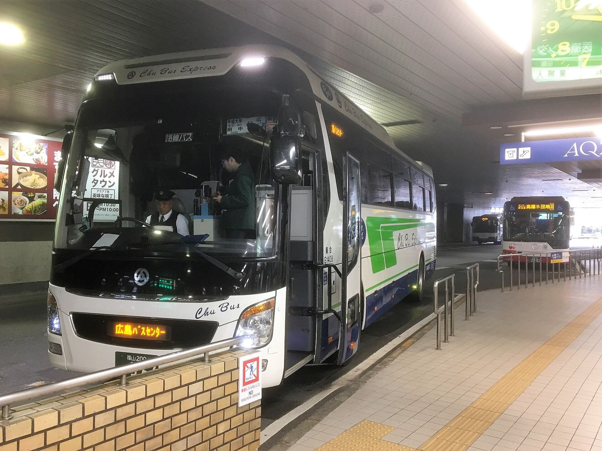
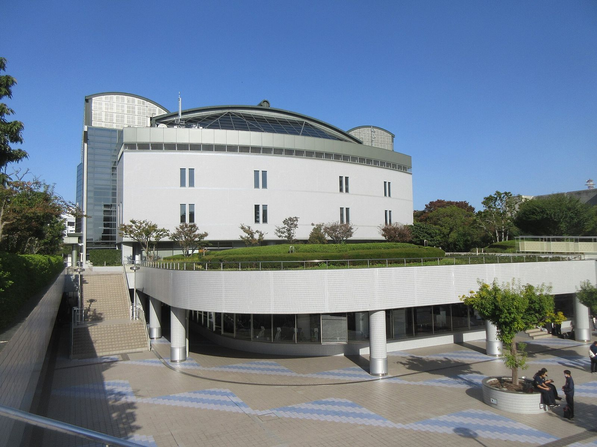
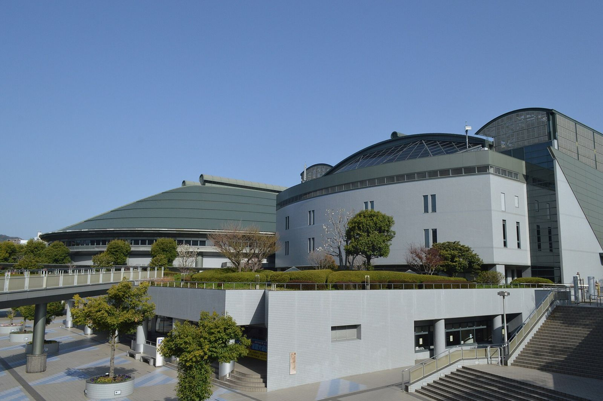

11/26 木 夜 → 11/29 日ゆりやと 広島でBUMPを

Etajima Island. - panoramio.jpg CC BY-SA 3.0ユウキとゆりやの広島。宿は中区、ライブは28日。
- ライブ
- 11/2818:00 開演
- 宿
- 2泊Hotel HAGOROMO
- 宿から会場
- 徒歩36分バスなら24分
下にスクロールで 26日夜 → 29日昼
ぜんぶの流れ
4日を1本の線でつなぐ

Okimi.jpg CC BY-SA 3.0ユウキは26日の夜行バスで先に広島へ（朝7:35に広島駅着）。27日は街を歩いて、夜に広島駅でゆりやを迎えてホテルへ。28日にライブ、29日の朝に自転車ツアー。ユウキは夜20:10のバスで東京へ。車は借りません。
- 126日 木 夜ユウキ 東京駅から夜行バス（21:10発）
- 227日 金ユウキ 広島の街を歩く → 夜 広島駅でゆりやを迎える → HAGOROMO
- 328日 土グッズ → お好み焼き → 18:00 BUMP OF CHICKEN（広島グリーンアリーナ）→ HAGOROMOへ戻る
- 429日 日チェックアウト → 10:00 自転車ツアー（13:00まで）→ ユウキは20:10のバスで東京へ
まだ確かめること
- Hotel HAGOROMOの予約予約済みBooking.com（11/27〜29の2泊）
- 宿泊者情報の登録2人ともチェックイン日までに必須。終わらないと暗証番号が出ない
- ゆりやの電車の切符発売待ち金沢→広島駅。JRの早割は乗る日のちょうど1か月前から
- 自転車ツアーの集合場所とお昼確認待ちゆりやが石飛さんに聞く
- 28日のグッズ確認待ち整理券があるか、ゆりやが公式で確かめる
- 遅いチェックイン心配なしセルフチェックインで15:00から入れる。22時半に着いても大丈夫
出発の前に
自転車はぴーすくるで前日までに登録

ぴーすくる（広島）公式サイト 画像：公式サイトより28日に使うシェアサイクルは、ドコモ・バイクシェアの広島エリア「ぴーすくる」。赤い電動自転車です。登録は最短5分。ゆりやとユウキ、2人とも自分のスマホで登録します（1つのアカウントで1台しか借りられません）。
- 1必要なものSMSが受け取れるスマホ。dアカウント・Apple・Googleのどれかのアカウント。支払いはクレジットカードかd払い
- 2アプリを入れるApp StoreかGoogle Playで「バイクシェアサービス」を探して入れる
- 3会員登録dアカウント・Google・Apple IDのどれかでログイン → マイエリアは広島を選ぶ（あとで変えられません）→ 料金プランを選ぶ → 支払い方法を登録
- 4あると便利交通系ICカードやスマホを鍵として登録すると、かざすだけで解錠できます（任意）
- 5使う日28日のホテルと会場のポートの間。借りる前に、アプリで自転車の空きを見る
まだ確かめること
- 料金確認待ち1日会員は1日1,100円という記事があります。公式の料金プランで確かめる
- 夜の返却確認待ち終演後にポートの空きがあるか。なければ電車かタクシー
26日 木 夜
ユウキは夜行バスで先に広島へ

Hiroshima Bus Center- arrivalside2017.jpg CC BY-SA 4.0東京駅を夜9時すぎに出て、朝7時半に広島駅の新幹線口に着きます。3列独立シートで、行きも帰りも予約済み。
- 出発
- 21:10東京駅八重洲南口
- 到着
- 7:35広島駅新幹線口
- 料金
- ¥8,500予約済み
- 1グランドリーム広島号 1便（JRバス中国）東京駅八重洲南口 21:10 → 広島駅新幹線口 7:35。01号車 10C
- 2乗るときQRコードを見せる。出発時刻を過ぎるとQRが出せないので、前もってスクショしておく
- 3予約WILLERで往復まとめて予約済み（往復¥17,500）。変更不可、取消は11/14まで110円
27日 金 夜
広島駅でゆりやを迎えてホテルへ
Okimi.jpg CC BY-SA 3.022時ごろ、金沢から電車で来るゆりやを広島駅で迎えます。駅からホテルまでは、バスか市電、またはタクシー。ホテルはセルフチェックインなので、遅く着いても入れます。
広島駅からホテルへ
- 広島駅でゆりやと合流22:00ごろ金沢からの電車
- バス（日赤病院西で降りる）約25分1人240円。21時台の検索結果。夜の最終便は乗る前に確認
- 市電1号線約34分
- タクシー約11分夜遅いときはこれが早い。料金は乗る前に確認
27日・28日 泊まるところ
中区のHotel HAGOROMOに2泊
江田島B邸（ADDress公式） 公式掲載写真広島駅から3.1km、ライブ会場から2.5kmのホテルです。ダブルルームに2人で泊まります。フロントは無く、1階のタブレットで自分でチェックインします。
- チェックイン
- 15:00〜セルフ・遅くてもOK
- チェックアウト
- 10:0029日
- 部屋
- 203号室2階・階段のみ
- 1予約Booking.comで予約済み（11/27〜29の2泊・ダブルルーム）
- 2宿泊者情報の登録チェックイン日までに2人とも必須。ホテルからのメッセージにある登録ページで済ませる。全員が終わらないと暗証番号が出ない
- 3当日のチェックイン1階のタブレットに、登録後に出るQRコードをかざす → 写真と署名 → 玄関と部屋の暗証番号をメモかスクショ
- 4支払い支払い済み（2026-10-27、Booking.comの「今すぐ支払う」で）。ホテルから「現地払い不可・返事を」というメッセージが来るが、全員に届く定型文なので返事は要らない。ほかから届いた支払いリンクは押さない
- 5エレベーター無い。荷物は階段で2階まで運ぶ
28日 土 昼
街でグッズとお好み焼き
Prepared okonomiyaki in Hiroshima.jpg CC BY-SA 4.0グッズを早い時間に買えるように、早めに街へ。ライブの前にお好み焼きを食べておきます。
この日の昼
- HAGOROMOを出る午前グッズを早めに買うため
- グッズ確認待ち整理券があるか、ゆりやが公式で確かめる
- お好み焼き昼ライブ前にしっかり食べておく
- 平和記念公園まで徒歩26分宿から1.8km
28日 土 夕方
会場へは歩いて36分自転車なら近道

Hiroshima-Prefectural-Sports-Center-1.jpg CC0車がないので駐車場の心配はありません。シェアサイクル「ぴーすくる」（ドコモ・バイクシェアの広島エリア）も使えます。ポートは会場とホテルのそれぞれの近くにあります。
HAGOROMOから会場
- 歩く36分2.5km
- ぴーすくる（電動自転車）ポートまで歩き 9分＋7分ホテル側 ポート129 センチュリーパーク千田町（徒歩9分）→ 会場側 ポート10 NTTクレド基町ビル（会場から徒歩7分）。どちらも24時間。自転車に乗る時間は10分前後（見込み）
- 電車・バス約24分混む時間は余裕を見る
- タクシー約12分終演後は混む
- 夜の返却確認待ち終演後にポートの空きがあるか、アプリで見る。なければ電車かタクシー
28日 土 夜
BUMP OF CHICKEN広島グリーンアリーナ

Hiroshima Prefectural Sports Center 2021-03 ac (1).jpg CC BY-SA 4.0BUMP OF CHICKEN TOUR 2026-2027 Ratio Clavis。ゆりやが当てたチケットです。終わったら、歩くかタクシーでホテルへ戻ります。
- 開場
- 17:0011/28 土
- 開演
- 18:00
- ホテルまで
- 徒歩36分タクシー約12分
- 1チケットゆりやの名義（2枚）
- 2電車・バス・自転車広電7号線で紙屋町西まで行き、歩いて17分（約29分・240円）。広電6号線＋バス、アストラムライン＋バスもあります（28〜34分）。ぴーすくるは、会場側のポート10で借りてホテル側のポート129に返せます。終演後の時刻とポートの空きは当日に調べ直す
- 3帰り終演後は会場前のタクシーが混みます。歩く道（2.5km）も考えておく
- 4問い合わせ夢番地広島 082-249-3571
29日 日 朝
チェックアウトして自転車で広島の街へ
Atomic Bomb Dome and Motoyasugawa River from Aioibashi Bridge 1.jpg CC BY-SA 4.0ホテルから集合場所までは歩いて26分。荷物の預け先だけ、前の日までに決めておきます。
この日の道
- HAGOROMOをチェックアウト〜10:009:30には出る。荷物はユウキが手配（帰りのバスは20:10）
- 歩いて 平和記念公園レストハウスへ〜9:301.8km・26分
- 自転車ツアー（sokoiko）10:00〜13:00石飛さん。集合場所は確認待ち
- ゆりやは少し広島を観光して帰る13:00〜
- ユウキは夜行バスで東京へ20:10セブンイレブン広島松原町店前 → 秋葉原 9:00（JAMJAM JX502・予約済み）
準備
持ちもの
- チケットゆりや。スマホの充電も
- 上着11月末の夜は冷える。ライブの帰りも
- モバイルバッテリーライブとGoogleマップで電池が減る
- 歩きやすい靴ホテルから会場まで徒歩36分・29日は自転車
- 交通系ICカードバスと市電に乗る
- シェアサイクルのアプリ「バイクシェアサービス」を2人とも入れて、28日の前日までに会員登録（マイエリアは広島）
分担
- ユウキ・ゆりやホテルの宿泊者情報を登録（2人とも・27日まで）
- ユウキ江田島B邸の10月分を取り消す（ガッツのレンタカーは10/27にWebで取り消し済み）
- ゆりや金沢→広島駅の電車の切符（27日・乗る日の1か月前から）
- ゆりや石飛さんに集合場所とお昼を聞く／グッズの整理券を確かめる
- ユウキ・ゆりや「バイクシェアサービス」アプリを入れて会員登録（28日の前日まで。マイエリアは広島・あとで変えられない）
おわり
それでは 11月28日に
予定が変わったらユウキに言ってください。このページも直します。
写真: Wikimedia Commons（各写真の出典はページ内）・ADDress公式